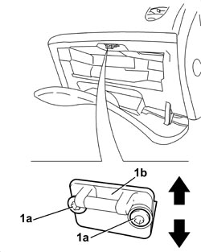

7040A33 GLOVE COMPARTMENT LOCK STRIKER - ADJUST
- Path
- Procedures > 70 FITTINGS > 7040 BODY INTERIOR FITTINGS AND TRIM > 7040A PASSENGER COMPARTMENT TRIMS > 7040A33 GLOVE COMPARTMENT LOCK STRIKER - ADJUST
- Kind
- repair procedure (removal / refitting; the operation number is the code)
- Applies to
- all engines; all production periods
- Interactive page
- https://sloeber94.github.io/elrnDB/#/939011239
Applies to: all engines; all production periods
- Open the compartment cover.
1. Loosen the bolts (1a) fixing the striker (1b).
Adjust the position of the striker.
2. When the adjustment is completed, tighten the bolts.
